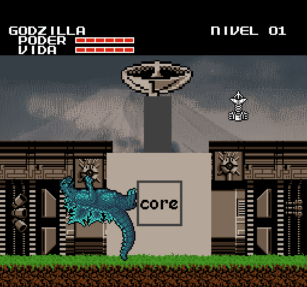

Wrong Way Wrong Way |
 Old Screenshots Old Screenshots |
 THE BOARD THE BOARD |
|---|
Here are ideas and elements that I ended up discarding while making the Wrong Way chapters.
|
For the prologue and GLACIER there is nothing I have discarded, since the first one was just a simple sequence and in GLACIER I already
had in mind what I wanted to do some time ago.
On the other hand, in KRONE I got to make a couple of changes, first I originally had in mind that, in the encounter with the BLACK & WHITE's black king, he would throw his cup at KING CEASAR and run away, to die shortly after. I never got around to it because I was able to edit his sprite to look like he was throwing something or running; so it never became more than an idea. |
 |
|---|
|
And on the other side is this first version of the last capture of the chapter. It doesn't have much more, I changed it because I made this version in a hurry. You can click to compare it with the final version. |
|
With NIHON I can say and show more stuff. First, the original idea I had in mind years ago, along with some other worlds that I will end up doing later. The world would simply be called JAPAN, would have a board similar to THE EARTH but flipped, with the same types of levels as NIHON and with GEZORA and a new monster as bosses. This new monster would be like a blue VARAN with a snake tail instead of legs and with the mouth of a lantern fish, I also had in mind that his fight would be underwater. Moving on to discarded things, there is this menu screen, that instead of showing “continue” the first option is “new game”, I changed it to imply that Marta's game is a direct continuation of Carl's game. Like the previous one, click to see the most transcendental change I have come to make. |
|
At first there was going to be a fight against the mysterious UFO after being damaged, but I ended up discarding it because I couldn't think of anything interesting for the fight. Also the UFO scene in the background was originally going to be in a PRADERA level, but I ended up changing it to OCEANO so that it would have more background presence. You can also click there. |
|
This is not discarded material, but it amuses me so I'm showing it too. Here is a... template (I don't know what to call it) of what I wanted the SATELLITE CANYON to look like. |
|  |
|
And now, this is the first image of the thing watching Marta... THE LOOKOUT. Originally it was just a pair of big eyes in the dark, have you played RIBBIT? I wanted to make the eyes like the final boss. In the end I tried to make something more than a pair of eyes because, one, there were people who were convinced by the idea when I showed it on a discord server, and two, because it seems to form the silhouette of Mickey Mouse's head. So I decided to go down a more exaggerated path with the same idea, in the end it didn't turn out so bad. By the way, its “level” was originally called “JUDEMENT”. |
|
And, to finish with NIHON, we have something different. You see, one of the things I wanted to do for the new chapters of Wrong Way is that in each new world there would be at some point a track composed by me. In this case, the theme would go to the CAPITAL CITY level, originally I had in mind to try to make a simple 8-bit cover of the classic theme of the 54 movie, but when I saw that it didn't work out well, I tried to make a more dynamic version. I made a couple of attempts with this idea in mind, but it didn't advance from the main melody and no accompaniment I made sounded good. Between the fact that the track was the only thing that prevented me from starting the editing and publication of the chapter, that I was tired of working in Nihon after 2 or 3 months irregularly and that in the end CAPITAL CITY hardly appeared, I decided to simply use for that part a version of the '54 theme, as I had in mind from the beginning. Anyway, here's the best I could come up with from my attempts (the first one is my favorite): |
|
And, if you want to see someone about to enter their 20's whistling into their cell phone an attempt at a song for a minute and a bit... well, here you have that too I guess. |